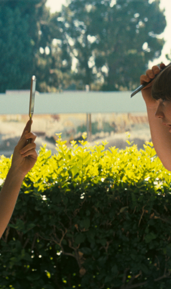
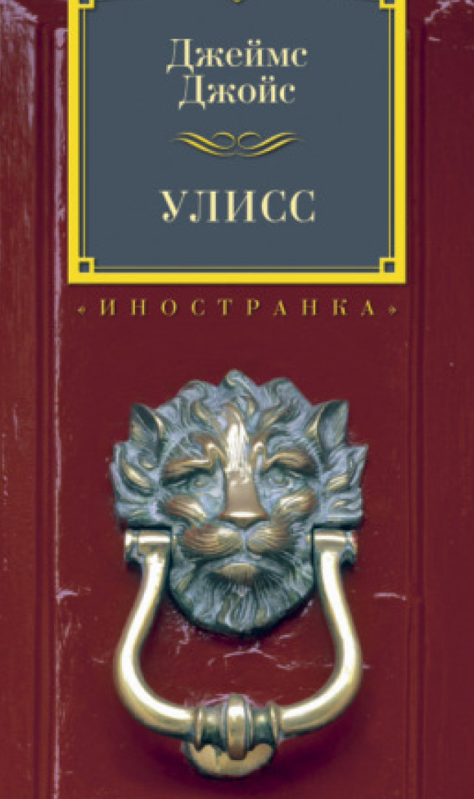
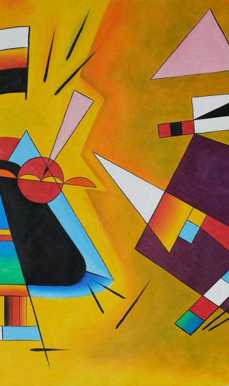

оно тебe надо
Лоты
-

Фильм режиссёра, который бросил киношколу
Не просто бросил, а ушёл с первой лекции. Какой была бы ваша ставка, если бы вы не знали, что режиссёр — Пол Томас Андерсон?
-

Книга, где описан один скучный день из жизни рекламного агента
Объёмом почти в тысячу страниц. Иногда без знаков препинания и с переходами на древнеанглийский. В ней одновременно рассказывается о 16 июня 1904 года и об истории литературы, начиная с античных времён. И это всё накладывается на эпическую поэму Гомера. Сколько бы вы поставили на «Улисса» Джеймса Джойса?
-

Картина, которую повторит даже 5-летний сын маминой подруги
Ну действительно, там линия, тут кружочек, а здесь и вовсе что-то похожее на инфузорию-туфельку. Никаких полей, лесов, котиков... Сколько бы вы на такое поставили, если бы не знали, что это — одна из революционных работ Кандинского?
Об аукционе
Здесь вы не встретите очередное пафосное собрание невероятно дорогого антиквариата. Наши лоты вообще не должны были попасть ни на один аукцион. Потому что кому нужен дневник девочки-подростка или картина, которую может нарисовать даже ребёнок? Кому нужны все эти странные вещи, созданные любителями?
Слишком сложные или, наоборот, слишком простые. Опережающие своё время. В пух и прах растерзанные критиками. Непринятые и непонятые. Когда-то они казались просто неудачными. Но, несмотря на критику, кажущуюся простоту или сложность, сейчас без этих лотов невозможно представить современную культуру. Когда в эти вещи не верил никто, продолжали верить их создатели. И сейчас эти лоты стали культовыми.